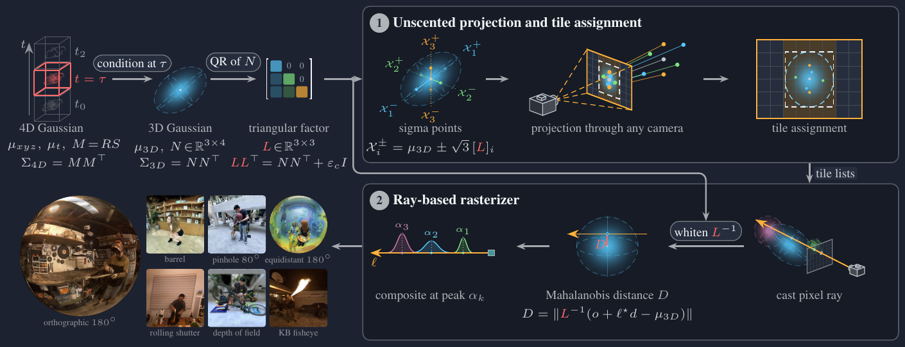

GlobalRolling
global shutterrolling shutter
Rolling shutter
Each image row is rendered at its own time and camera pose, as a rolling-shutter sensor reads it out.
Ray-Based 4D Gaussian Rendering
for Arbitrary Camera Models
Each tile is one trained 4D Gaussian model. Lens, camera and time change as it plays.
1UNED, Universidad Nacional de Educación a Distancia, Madrid 2Volograms, Dublin
Real cameras are not pinholes, yet most dynamic Gaussian splatting assumes they are. Footage is therefore undistorted first, losing field of view or detail, especially with wide-angle and fisheye cameras. Static Gaussian splatting has largely solved this with ray-based rendering, which suits any camera. Native 4D Gaussians, which model motion in space-time, cannot use it directly: each Gaussian's orientation and size cannot be recovered reliably from its covariance.
We present AnyCam4D, which trains native 4D Gaussians on original footage by ray-based rasterization, preserving field of view and resolution at about the per-step cost of standard projection. Our key contribution is a numerically stable way to obtain orientation and size: we condition a square root of the 4D covariance. Trained models render through other cameras, with rolling shutter, depth of field or chromatic aberration. With a synthetic 170° fisheye camera, training on original images improves peak signal-to-noise ratio (PSNR) by 3.0–8.1 dB. On real footage, AnyCam4D has lower perceptual error than the standard projection adapted to each camera, at comparable PSNR and without camera-specific derivations. With the synthetic camera rotated 60–80° away from the capture rig's view, it leads by 6.2 dB against ground truth.
A trained model renders through lenses it was never trained with. Some scenes open from a pinhole through Brown–Conrady and Kannala–Brandt lenses to a 180° fisheye, one shows a circular fisheye through three projections, and the others bend the image with strong lens distortions. Pick a scene, then drag the slider.
Because every pixel traces its own ray, a trained model also renders effects that a single projection per image cannot express.
Each image row is rendered at its own time and camera pose, as a rolling-shutter sensor reads it out.
A thin-lens model focuses the render at a chosen depth, through any lens model. Time is frozen while the focus moves.
Each wavelength is rendered through its own lens model, which spreads colour towards the edge of the frame. The strength is exaggerated.
A pinhole image of a fisheye frame cannot keep both its field of view and the resolution at its centre. Undistorting to the full field of view spreads the centre over fewer pixels, and keeping the centre sharp crops the field. AnyCam4D trains on the native frame and keeps both. The coloured bands mark the angle from the optical axis, and the chart shows how many pixels per degree each band receives. With a synthetic 170° fisheye camera, training on the original images improves PSNR by 3.0–8.1 dB.
A ray-based renderer handles any lens, but it needs each Gaussian's orientation and size. A 4D Gaussian sliced in time does not provide them in a form that survives 32-bit arithmetic. AnyCam4D keeps them by conditioning a square root of the 4D covariance instead of the covariance itself.
01
Ray-based rendering, as in the 3D Gaussian Unscented Transform (3DGUT), works with any camera because it never approximates the lens by a straight-line projection. Sigma points along each Gaussian's axes go through the real lens to select the image tiles it covers, and each pixel ray then meets the Gaussian at its densest point. Both steps need the Gaussian's orientation and size, as a square root \(B\) of its covariance. A static 3D Gaussian stores rotation \(R\) and scales \(S\), so \(B = RS\) is at hand.
02
A native 4D Gaussian spans space and time. At render time \(\tau\) it is conditioned on \(t = \tau\). Its mean then moves with constant velocity, a temporal gate \(w_t\) fades it in and out, and its 3D covariance is what remains of the 4D one once time is fixed. Conditioning returns this covariance as a matrix, not as a rotation and scales.
03
An eigendecomposition of \(\Sigma_{3D}\) would recover rotation and scales, but its gradient is undefined when two axes are equal, which is how Gaussians start. A Cholesky factor avoids this, yet the covariance is already damaged. For a fast, thin Gaussian, long in space-time but thin at any instant, the subtraction above cancels two nearly equal matrices. Along a thin axis at \(10^{-4}\) of the longest, a variance of \(10^{-8}\) is the difference of two numbers close to one, and 32-bit floating point (fp32) keeps only about seven significant digits. The thin axis is lost to rounding, and its variance can even come out negative.
04
The 4D Gaussian does store rotation and scales, so a square root of its 4D covariance is at hand, \(M = RS\). Removing the time direction \(\hat m\) from every axis of \(M\) gives a square root \(N\) of exactly the same \(\Sigma_{3D}\), without the subtraction. \(N\) holds axis lengths instead of their squares, so a thin axis at \(10^{-4}\) stays three digits above fp32 rounding.
05
Whitening a ray applies the inverse of the square root, but \(N\) has three rows and four columns and no inverse. Forming \(NN^\top\) to factor it would bring back the squares that lose thin axes. Instead, a QR decomposition of \(N\), stacked on a small floor \(\sqrt{\varepsilon_c}\,I\), gives a square, triangular \(L\) with \(LL^\top = \Sigma_{3D} + \varepsilon_c I\). Because \(L\) is triangular, its inverse is applied row by row without ever being formed, and it stores six numbers instead of twelve. \(L\) takes the place of rotation and scales: its columns give the sigma points, and it whitens each pixel ray, so the densest point along the ray follows in closed form. In training, non-finite gradients on native lenses fell from 4 of 49 runs to none of 72.
At render time \(\tau\), each 4D Gaussian is conditioned in factored form. Its square root \(N\) gives the 3D Gaussian, and a QR decomposition turns \(N\) into the triangular factor \(L\). The renderer then works in two stages. First, the unscented projection maps the mean and six sigma points, placed at \(\pm\sqrt{3}\) times each column of \(L\), through the camera model and assigns the Gaussian to every tile their bounding box covers. Second, the ray-based rasterizer casts one ray per pixel, whitens it with \(L^{-1}\), and composites each Gaussian with its opacity at the densest point along the ray. Neither stage needs a derivation for a particular camera, so one trained model renders through pinhole, fisheye, orthographic and Kannala–Brandt lenses, and with rolling shutter or depth of field.

Train through the lens you have.
Render through the lens you want.
@article{kirch2026anycam4d,
title = {AnyCam4D: Ray-Based 4D Gaussian Rendering for Arbitrary Camera Models},
author = {Kirch, Sascha and Pag{\'e}s, Rafael and Ond{\v{r}}ej, Jan and
P{\'e}rez-Molina, Clara and Martin, Sergio},
journal = {arXiv preprint},
year = {2026}
}